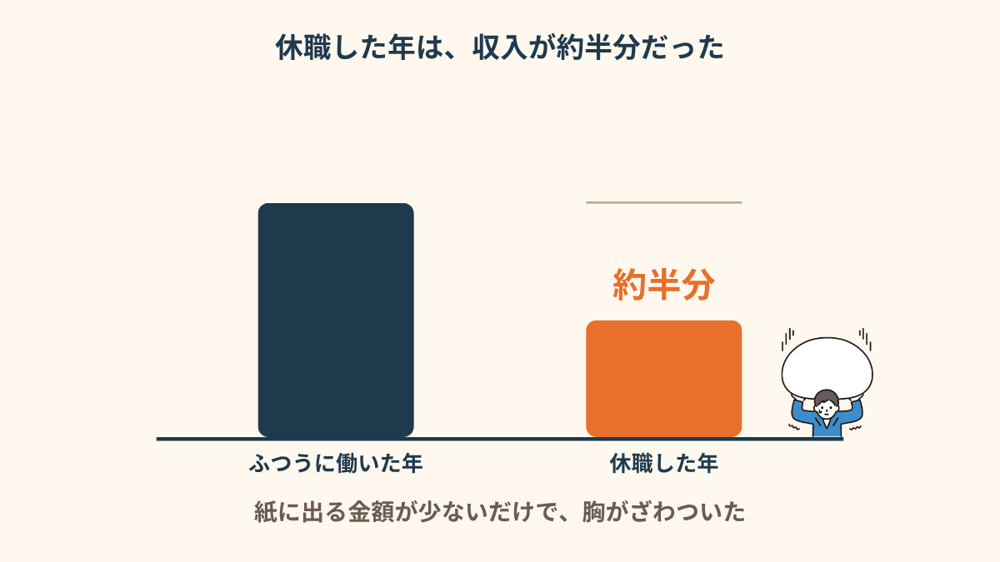
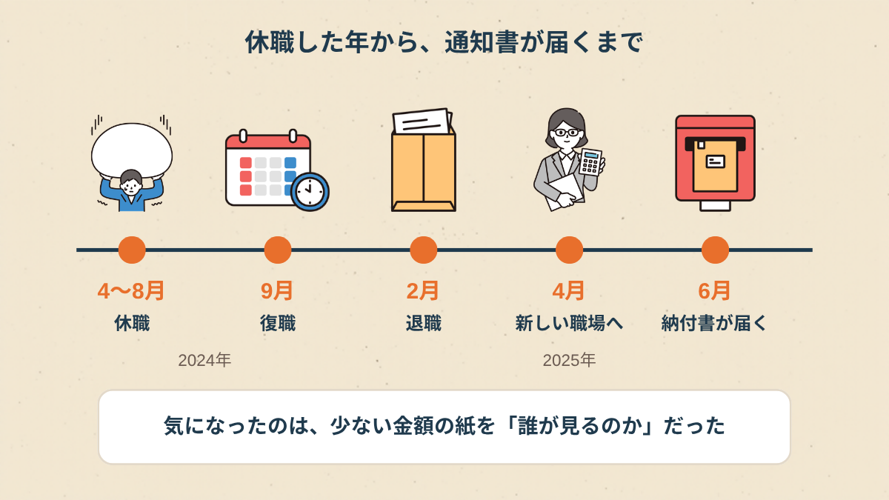
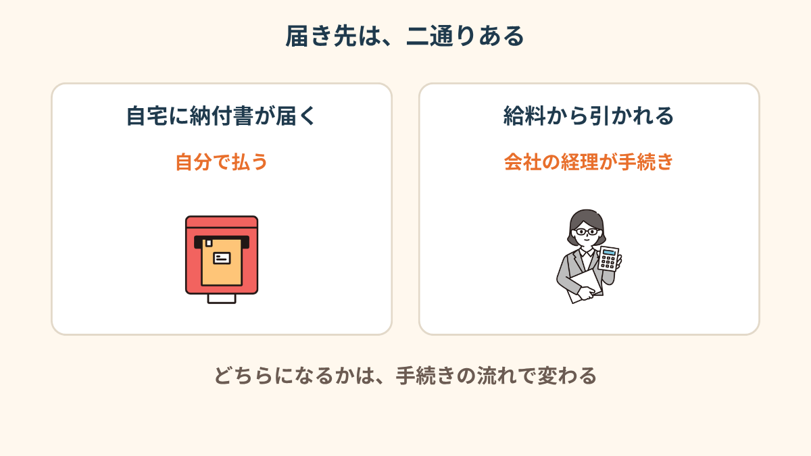
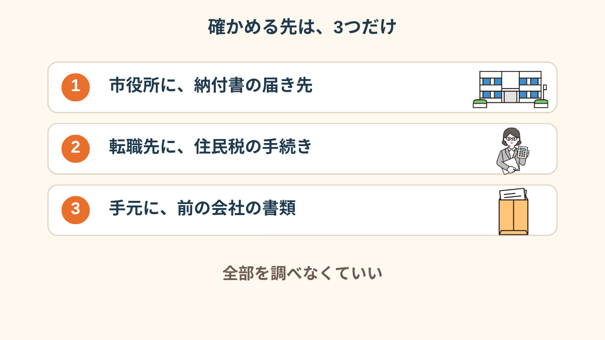
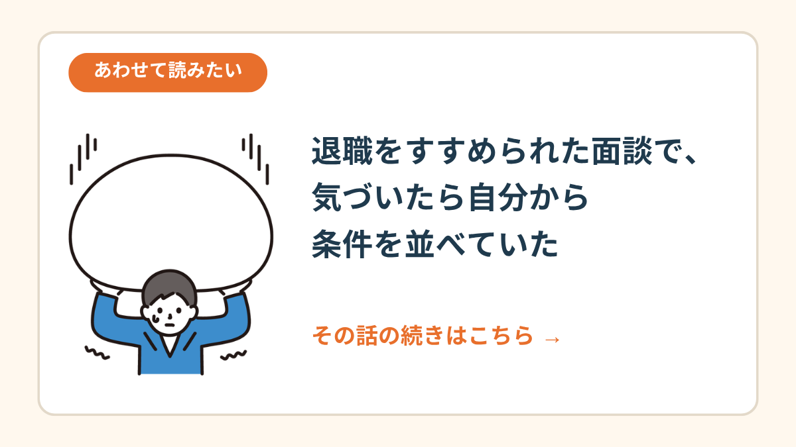
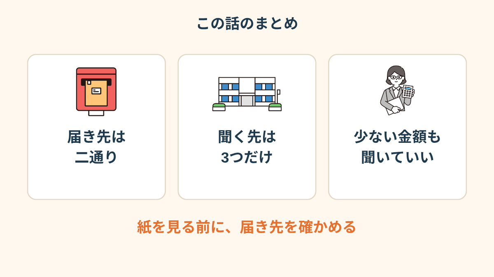

新しい職場の入社手続きの案内メール。
その真ん中あたりに、「住民税の切り替えについて」という一行があった。
去年の4月から8月まで、私は休職していた。
あの年の収入、たぶん半分くらいだったはず。
スクロールしていた指が、そこで止まった。
PR


入社案内の「住民税」の4文字で、スクロールが止まった
2月に前の会社を辞めて、4月から新しい職場で働くことが決まっていました。
休職は去年の4月から8月まで。9月に復職したものの、結局その会社は辞めることにしたんです。
転職先から届いた案内メールは、保険証や年金手帳の話が並んでいて、その下のほうに住民税の一行。
読み飛ばせばいいのに、そこだけ何回も読みました。
住民税って、前の年の収入で決まる、と聞いたことがあったからです。
入社前の事務手続きって、書類の字面だけで急に不安になることがあります。気になったのは、おかしなことではないです。まめざる
案内メールを閉じてから、しばらく動けなかった
去年の収入は、ほぼ半分だった
前の会社の源泉徴収票を引っ張り出して、金額を見ました。
休職中は傷病手当金で、給与としての収入は止まっていた期間です。
去年の収入は、ふつうに働いた年のだいたい半分でした。

金額が少ない、というだけで、胸がざわついた
この数字が、新しい職場のどこかに伝わるのかな、と思ったんです。
伝わったとして、何か言われるのかな、とも。
「通知書の金額が少なくて、ぞっとしました。悪いことなんて何もしてないのに、隠し事をしてる気分になるんですよね。別に隠してるわけでもないのに」
30代・男性（適応障害で休職・営業職）
あの紙を、誰が見るのかが分からなかった
金額そのものより、本当に引っかかっていたのは「あの紙を、誰が見るのか」でした。
新しい職場の経理の人が、私の去年の収入を見るのか。
見たら、休職していたことに気づくのか。
調べても、出てくるのは「転職したときの住民税の手続き」という会社員向けの話ばかり。
休職した年の翌年の話は、ほとんど見つかりませんでした。

時間軸にしてみたら、「6月に届く紙」がいちばん気になる点だった
相談の一コマ
相談者
隠したいわけじゃないんです。ただ、自分から言う前に、紙で先にバレるのが怖くて。
まめざる
「自分で話す前に知られる」のが怖い、という感じなんですね。その紙は、いつ、誰のところに届くと思っていますか？
相談者
それが分からないんです。会社に届くのか、自分の家なのか。そこから分からなくて。
まめざる
そこが一番もやもやするところですね。それは、調べるより聞いたほうが早い部分かもしれません。
i
「今の自分の気持ちが、よく分からなくなった」というときは、2問で答えられる
気持ちスキャン診断もあります。よかったら覗いてみてください。
届き先は、二通りあると知った
市役所の住民税の窓口に電話して、聞きました。
教えてもらったのは、納付書が自宅に届いて自分で払うやり方と、会社の給料から引かれるやり方の二通りがあること。

どちらになるかは、手続きの流れで変わる、と聞いた
どっちになるかは、転職のタイミングや会社のやり方でも変わるそうで、一概には言えない、と。
電話は5分もかからなくて、あれだけ調べていた2日間は何だったんだ、と力が抜けました。
「『届き先は手続きによります』って、それだけでした。拍子抜けして、でも、聞かなかったらまだ一人で想像して怖がってたと思います」
40代・女性（うつ病で休職・事務職）
確かめる先を、3つに絞った
全部を調べようとすると、また夜が潰れます。
なので、確かめる先を3つに絞りました。

全部を調べなくていい。確かめるのは、この3つだけ
転職先の経理には、メールで一行だけ聞きました。
「住民税の手続きについて、前の会社の書類で足りるか教えてください」。
休職のことは書かず、手続きに必要なことだけ聞いたら、返事は「この書類をください」で終わりました（会社によって違うと思います）。
休職のことを新しい職場に話すかどうかは、自分で決めていいことです。話す日を、紙に決められなくて大丈夫です。まめざる

退職をすすめられた面談の話 →
!
この記事は、実際にあった複数の話を組み合わせて書いたものです。住民税の届き先や手続きは、自治体や会社、転職の時期によって変わります。休職を新しい職場に伝えるかどうかの判断も含め、最終的には市区町村の窓口や会社の担当者、必要なら専門機関にご確認ください（2026年10月時点の情報です）。
Q. 休職すると、住民税の金額から転職先に分かってしまいますか？
一律には言えません。収入が少なくなる理由は休職以外にもいろいろあり、金額だけで特定できると決まっているわけではないとされています。ただ、会社の給料から引かれる形になる場合は、会社の経理が税額の通知を扱うと説明されています。気になる場合は、住民税の窓口と転職先の担当者に手続きの流れを確認してみてください（2026年10月時点の情報です）。
Q. 住民税は、自分で払う形（普通徴収）にできますか？
自治体や会社の運用、転職のタイミングによって変わるため、一概には言えません。転職先が会社経由の手続きを前提にしている場合もあります。市区町村の窓口と転職先の担当者の両方に、確認しておくと安心です。
Q. 休職で収入が減った年の翌年も、住民税は同じように払うのですか？
住民税は前年の所得をもとに計算されると説明されていて、収入が減れば税額が変わる場合があります。払うのが難しいときの減免や分割の相談を受け付けている自治体もあるとされています。詳しくは、お住まいの市区町村の窓口でお尋ねください。
Q. 休職していたことは、転職先に必ず伝えないといけませんか？
状況によって変わり、一律に決まっているわけではありません。面接や書類で聞かれたときの答え方に迷う場合は、ハローワークや就労支援の窓口に相談してみてください。経歴を事実と違う形で伝えると、あとで困ることもあるとされているので、不安なうちは一人で決めず、聞いてみるのがおすすめです。

紙を見て怖がる前に、届き先を確かめる
PR


まずは無料で相談してみる
お金のことも、転職先への伝え方も、うまく説明できなくて大丈夫です。一緒に整理していきましょう。
無料相談はこちら
この記事に、聞いてみたいことはありますか？
「自分の場合はどうなんだろう」と思ったことを、気軽に書いてみてください。いただいた質問は個別にお返事したうえで、匿名で記事にすることがあります。
お
おのざる
mimemime代表。就労支援の現場経験をもとに、障がいのある方の働く不安に寄り添う記事を執筆。